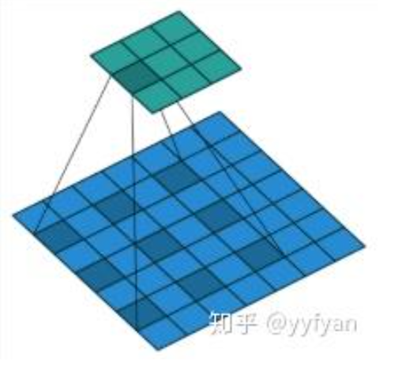
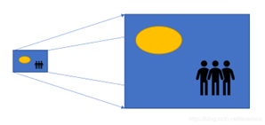
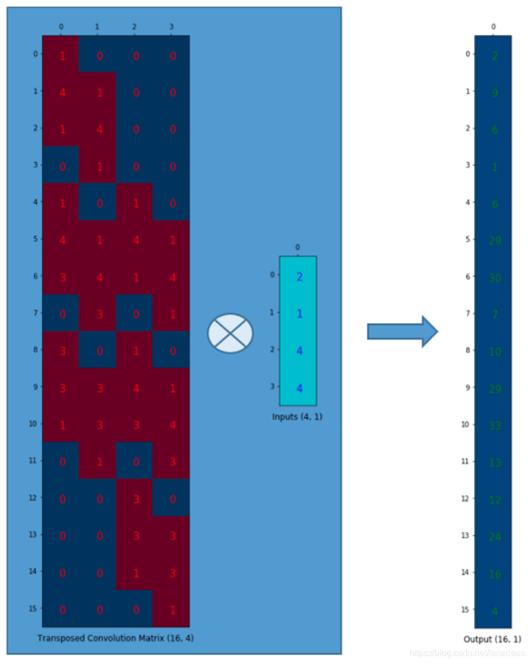
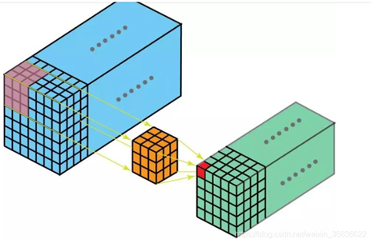

【总结】论文复现组4月13日交流会
2025/4/13
总结
1.BN(3.30例会)
普通的归一化在训练前进行，在样本维度上归一化。BN在训练中进行，有需要学习的参数，在通道维度上归一化。
2.Resnet变体
Resnet变种网络架构(如ResNetV2、WRNS、ResNext、Res2Net等)。变体网络pdf文件下载
3.FLOPS与FLOPs
FLOPS是floating point operations per second的缩写，指每秒浮点运算次数，理解为计算速度，可以用来衡量硬件的性能。
FLOPs是floating point operations的缩写（s表复数），指浮点运算次数，可以用来衡量算法/模型的复杂度，表示计算量。论文中常用的还有GFLOPs和TFLOPs。
4.其他卷积运算
1)空洞卷积

2)转置卷积


3)三维卷积

任务
1.在https://forms.gle/Uns69VhP6H96NW2eA上传Resnet学习报告，不要求字数，简单总结即可。可从"解决的问题"、"解决问题的方式"两方面简单讲述。水平高的同学可以额外介绍扩展的知识点，如BN，代码细节等内容。(第二学期以来做过展示的同学无需提交)。
截止时间：4月23日前。
2.学习YOLO系列，从YOLOv1开始，可自行查找资料学习(建议从观看博客、b站视频入手)。论文读YOLOv2(YOLO9000)，论文下载，建议先查找资料学习后再读论文，本周不要求进入到读论文的阶段。